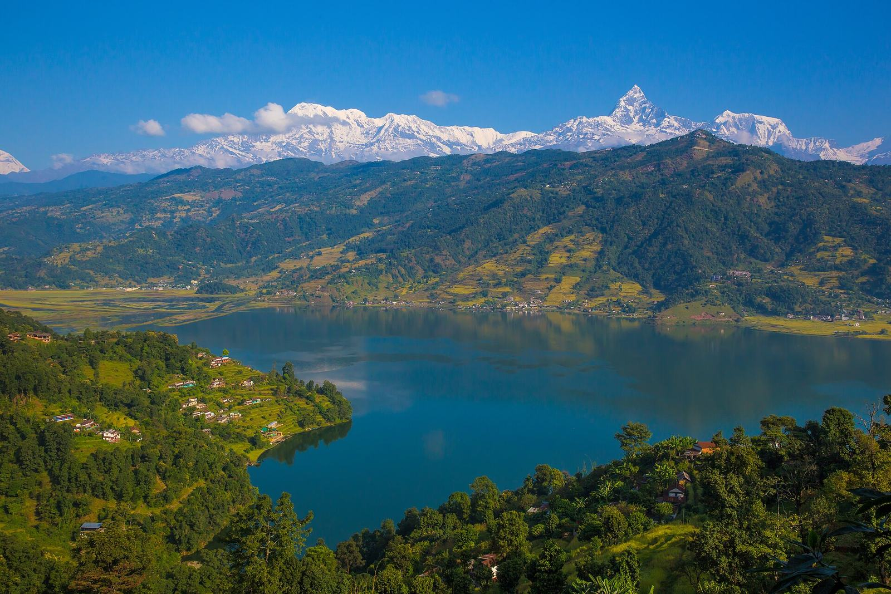
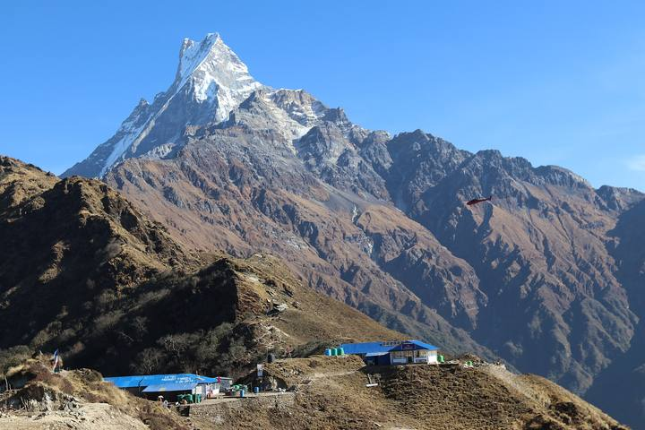

Panchase
Three or four days on foot from the Pokhara lakeside: along the ridge to Bhumdi and Panchase Bhanjyang, up stone steps to the top at 2,517 m, and out by Bhadaure to Kande.


- Duration
- 2–5 days
- Distance
- 35 kmapproximate
- Highest point
- 2,517 mPanchase Peak · 8,258 ft
- Highest night
- 2,050 mPanchase Bhanjyang
- Difficulty
- EasyTeahouse lodges · Homestays
- Best months
- Mar–Apr, Oct–Dec
Is this trek right for me?
The walking
4 days in all. Most walking days are 4 to 5 hours on foot, and the longest is about 6 hours. Short days below 3,500 m on good paths. Fine for a first trek.
The height
You never sleep above 2,050 m, so altitude is not a worry on this trek.
Where you sleep
In lodges every night: a simple twin room, a shared bathroom and hot meals in a warm dining room.
The help you need
A guide is optional here. Many people still take one for company, local knowledge and peace of mind.
Overview
Panchase is the forested hill at the far end of Phewa Lake, the highest point on the skyline when you look up the lake from Pokhara. The trek walks the horseshoe of ridges around the lake: along the southern rim from the World Peace Pagoda to Bhumdi and Panchase Bhanjyang, up to the top at 2,517 m, then north to Bhadaure and the Baglung highway at Kande. You never sleep higher than about 2,050 m, so altitude is not something to worry about.
This is a village and forest walk, not a mountain trek. The first day passes farms and small hotels on the ridge above the lake. Beyond Bhumdi the ridge runs into a protected forest of oak and rhododendron, where more than a hundred kinds of orchid have been recorded. What you come for is the dawn from the top: Dhaulagiri, the Annapurnas, Machhapuchhre and, on a sharp morning, Manaslu, with the lake and the city far below. You will meet few other trekkers.
Expect stone steps. The climb from the lake to the pagoda, the last hour to the summit and long stretches of the way down are staircases, and they are slippery when wet. The days are short, four to six hours, and a dirt road is never far off: Bhumdi, the Bhanjyang and Bhadaure can all be reached by jeep in dry weather, so a tired walker can ride out. Lodges are small family places with plain rooms, shared toilets and a short menu.
Highlights
- Dawn from the top of Panchase, from Dhaulagiri round to Manaslu
- A trek that begins with a boat across Phewa Lake
- Protected forest with rhododendron and more than a hundred orchids
- Ridge villages and family lodges with very few other trekkers
- No permit, no long drive, and a road close by if you need it
Easy: Low altitude, short days and a road close by; the effort is in the stone staircases, above all the 450 m climb to the top and the long way down the other side.
Altitude profile
Height at the end of each day, with the high points in between. Dots are the places you sleep.
Low altitude risk. You never sleep above 3,000 m on this itinerary, so altitude illness is unlikely. Mild headaches and breathlessness on the climbs are still normal.
Day by day
About 15–20 h of walking in total. Times are for a steady pace with short breaks; add more for photos and tea.
-
Day1
Pokhara to Bhumdi by the World Peace Pagoda
Pokhara to World Peace Pagoda to Bhumdi
Cross Phewa Lake by boat and climb about 300 m on stone steps through forest to the pagoda, 45 minutes to an hour. From there the way follows the ridge west past the tall Shiva statue at Pumdikot, partly on a quiet road, with the lake below on your right, to the lodges at Bhumdi.
3 places to stay in Bhumdi, such as Himalayan View Tea House, sonica homestay bhumdi and Peace Home Tea House & Camping. See them
- Sleep at
- 1,520 m
- Change
- +698 m
- Walking
- 4–5 h
- Distance
- 10 km
-
Day2
Bhumdi to Panchase Bhanjyang
A steady day along the ridge that ends about 500 m higher, with ups and downs on the way: first past scattered farms, then through thick forest. Much of it follows a rough jeep track with footpath shortcuts. Tea shops are few, so carry lunch and water. Published distances run from 7 to 14 km.
7 places to stay in Panchase Bhanjyang, such as Panchase Resort Pvt.Ltd, Green Village and The Happy Heart Hotel. See them
- Sleep at
- 2,050 m
- Change
- +530 m
- Walking
- 5–6 h
-
Day3
Panchase Peak at sunrise, down to Bhadaure
Panchase Bhanjyang to Panchase Peak to Bhadaure
Start an hour and a half before sunrise with a head torch: about 450 m of stone steps through mossy forest to the temple and viewpoint. Go back to the lodge for breakfast, or carry your bag over the top. Either way the path then drops along the forested north ridge to Bhadaure, steeply in places.
17 places to stay in Bhadaure, such as Holiness Guest House and restaurant, Tamu Hyaula Home Stay and View Point Guest House. See them
High point day- Sleep at
- 1,650 m
- Change
- −400 m
- High point
- 2,517 m
- Walking
- 4–6 h
-
Day4
Bhadaure to Kande, drive to Pokhara
A short last morning along the ridge, on the dirt road and the paths beside it, with Annapurna South and Machhapuchhre ahead of you. Kande is on the highway, an hour from Pokhara by bus or taxi. If you would sooner not walk, the local bus or a jeep leaves from Bhadaure itself.
14 places to stay in Kande, such as Thakalu Hotel & Restaurant, Manisha Hotel & Restaurant and Annapurna Lodge & Restaurant. See them
- Walk ends at
- 1,770 m
- Change
- +120 m
- Walking
- 2–3 h
Ways to change it
Three days
Walk from the top straight on through Bhadaure to Kande on day three, six to seven hours in all, or take the bus from Bhadaure that afternoon.
Two days from Kande
Drive to Kande or Bhadaure, walk up to the Bhanjyang for the night, climb the peak at dawn and go back the same way. It is the shortest way to see the sunrise, and the gentlest.
Up from Ghatichhina
Local buses run from Pokhara round the north shore of the lake to Ghatichhina, at the head of the valley. A steep path climbs from there to the Bhanjyang in about four hours. Coming down this way, be at the road by mid-afternoon for the last bus.
Finish at Naudanda
From Bhadaure a ridge path leads north-east to the highway at Naudanda instead of Kande, two to three hours, with a wider view over the Pokhara valley.
Add Australian Camp
Cross the highway at Kande and climb an hour of steps to the lodges at Australian Camp for one more night of mountain views. You are then inside the conservation area, where the rules on permits and guides apply.
Route map
The map loads when you scroll here. It needs a connection the first time; tiles you have viewed stay available offline.
The solid line follows footpaths mapped in OpenStreetMap. It is a guide to where the route goes, not a navigation track: trails are rerouted after landslides, so follow the signs and people on the ground. Marker positions come from OpenStreetMap where we could match a place, and from our own estimates elsewhere.
Download the trail for a map app A GPX file with 39 km of mapped path and every stop. It opens in free apps such as Organic Maps.
When to go
- January: good
- February: good
- March: best time
- April: best time
- May: good
- June: difficult
- July: difficult
- August: difficult
- September: good
- October: best time
- November: best time
- December: best time
October to December gives the clearest dawns. March and April are warmer, with rhododendron and orchids in flower but more haze over the mountains. January and February are cold at the Bhanjyang, with frost and now and then a dusting of snow on top. From June to September the forest is very wet, the steps are slick and Panchase is known for its leeches.
Permits and guide rules
Guide optional. Panchase lies in a protected forest outside the Annapurna Conservation Area, and no permit post on this route checks for a guide. One is still worth having on a first trek: the forest between Bhumdi and the Bhanjyang has unmarked forks and few people to ask, and it is not a place to walk alone. A guide also knows which family lodges are open.
No trekking permit is needed for this route.
Getting there
The walk starts from the Pokhara lakeside itself: a rowing boat across Phewa Lake to the foot of the pagoda hill, or a taxi to the car park just below the stupa. It ends on the Baglung highway at Kande, about an hour from Pokhara by bus or taxi. A dirt road also reaches Bhadaure, where local buses and jeeps leave for the city.
-
Drive: Pokhara to World Peace Pagoda · 20–30 min
Taxi from Lakeside to the car park, then ten to fifteen minutes on foot. It saves the first 300 m of stone steps. The boat across the lake takes about twenty minutes.
-
Bus: Kande to Pokhara · 1–1.5 hr
Buses coming from Baglung and Nayapul stop at the bazaar all day. A taxi takes about an hour.
-
Jeep: Bhadaure to Pokhara · 1.5–2 hr
For anyone who skips the last morning's walk. Ask your lodge the evening before when the local bus or a jeep leaves.
Hazards on this route
Stone steps, wet or dry
The staircases to the pagoda and the summit, and the long descent to Bhadaure, are hard on the knees and slippery with rain, dew or frost. Use two poles, wear shoes with a real tread and take the downhill slowly.
Leeches in the wet months
Panchase forest is one of the wettest places near Pokhara. From June to September, and after heavy rain in May or October, leeches are thick on the path. Wear long socks, carry salt or repellent and check your ankles at every stop.
Unmarked forks on day two
Between Bhumdi and the Bhanjyang the jeep track and the footpath keep splitting and rejoining, and few junctions are signed. A wrong turn takes you off the ridge and costs an hour of climbing back. Ask at houses and carry an offline map.
Walking alone in the forest
In past years lone walkers were robbed on the forest paths below the World Peace Pagoda. Reports are rare now, but do not walk the first day or the forest stretches by yourself, and keep valuables out of sight.
Practical tips
- Cross the lake by eight on the first morning, so that the day's walking is over by early afternoon.
- A taxi to the pagoda car park cuts out the first 300 m of steps. It is a sensible choice if stairs are your weak point.
- Carry a head torch and a warm jacket for the summit morning; from November to February it is close to freezing on top at dawn.
- We found no permit or entry fee for this route, which stays south of the conservation area. Some agencies add an ACAP permit all the same; you need one only if you go on north of the highway, where permits are checked at Pothana.
- Bring cash from Pokhara. There is no cash machine on the route, and lodges cannot change large notes.
- Phone coverage is usually good on the ridges, so a lodge can call a jeep if someone in your party has had enough.
We know of no cash machines on this route. Carry all the rupees you need from Pokhara. Work out how much.
Plan this trek
Choose your dates and see the whole trip on one page: where you sleep each night, who can help you, what it may cost and the papers you need. Then ask for a price.
More tools for this trek
Who can help you on this trek
A guide is optional here. Many people still take one for company, local knowledge and peace of mind.
-
A trekking company that arranges everythingOne price for everything on the trek. Ask two or three companies.
-
A guide, and a porter to carry your bagAbout USD 25 to 40 a day for the guide and USD 18 to 25 for the porter.
-
A guideAbout USD 25 to 40 a day.
-
A porter to carry your bagAbout USD 18 to 25 a day.
-
On your ownNo daily cost, and nobody to turn to if something goes wrong.
Do you work on the Panchase route as a guide, porter or company? Join TrekkSewa.
Quick answers
How long does the Panchase trek take?
Most people take 2–5 days. The itinerary on this page is 4 days.
How high does the Panchase trek go?
The highest point is Panchase Peak at 2,517 m (8,258 ft). The highest place you sleep is Panchase Bhanjyang at 2,050 m.
How difficult is it?
We grade it easy. Low altitude, short days and a road close by; the effort is in the stone staircases, above all the 450 m climb to the top and the long way down the other side.
Which permits do I need?
No trekking permit is needed for this route.
Do I need a guide?
Panchase lies in a protected forest outside the Annapurna Conservation Area, and no permit post on this route checks for a guide. One is still worth having on a first trek: the forest between Bhumdi and the Bhanjyang has unmarked forks and few people to ask, and it is not a place to walk alone. A guide also knows which family lodges are open.
When is the best time to go?
Mar–Apr, Oct–Dec are best. October to December gives the clearest dawns. March and April are warmer, with rhododendron and orchids in flower but more haze over the mountains. January and February are cold at the Bhanjyang, with frost and now and then a dusting of snow on top. From June to September the forest is very wet, the steps are slick and Panchase is known for its leeches.
Stage plans on this route vary between operators; treat distances and times as approximate. Reviewed 2026-11. Trails, lodges and rules change; confirm locally before you rely on any detail. Report a correction.
Similar treks
More in Annapurna Annapurna
Annapurna
Royal Trek
Four easy days through hill villages east of Pokhara to Begnas Lake
 Annapurna
Annapurna
Ghandruk Loop
A short circuit of Gurung villages on both sides of the Modi Khola
 Annapurna
Annapurna
Ghorepani Poon Hill
A short loop through rhododendron forest to a famous sunrise ridge

AnnapurnaMardi Himal
A narrow ridge walk to the foot of Machhapuchhre in five days